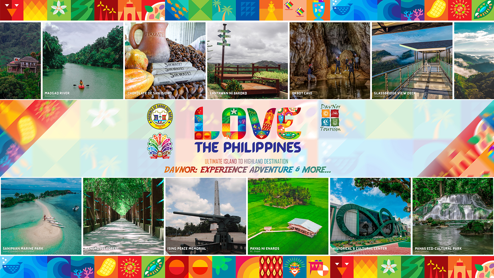

Quick Facts
Davao del Norte
Davao del Norte (Cebuano: Amihanang Dabaw; Filipino: Hilagang Davao), officially the Province of Davao del Norte (Cebuano: Probinsya sa Amihanang Dabaw, Probinsya sa Davao del Norte; Filipino: Lalawigan ng Hilagang Davao, Lalawigan ng Davao del Norte), is a province in the Philippines located in the Davao Region in Mindanao. Its capital and largest city is Tagum. The province also includes Samal Island to the south in Davao Gulf. Before 1967, the five provinces—Davao de Oro, Davao del Norte, Davao del Sur, Davao Occidental, Davao Oriental—and Davao City were administered as a single province named Davao, a provincial district of the Department of Mindanao and Sulu. The present-day Davao Region is coterminous with this former province. Davao del Norte is also known as "The Banana Capital of the Philippines” and is the most populous province in the Davao Region.
Reference: davaodelnorte-quick-facts